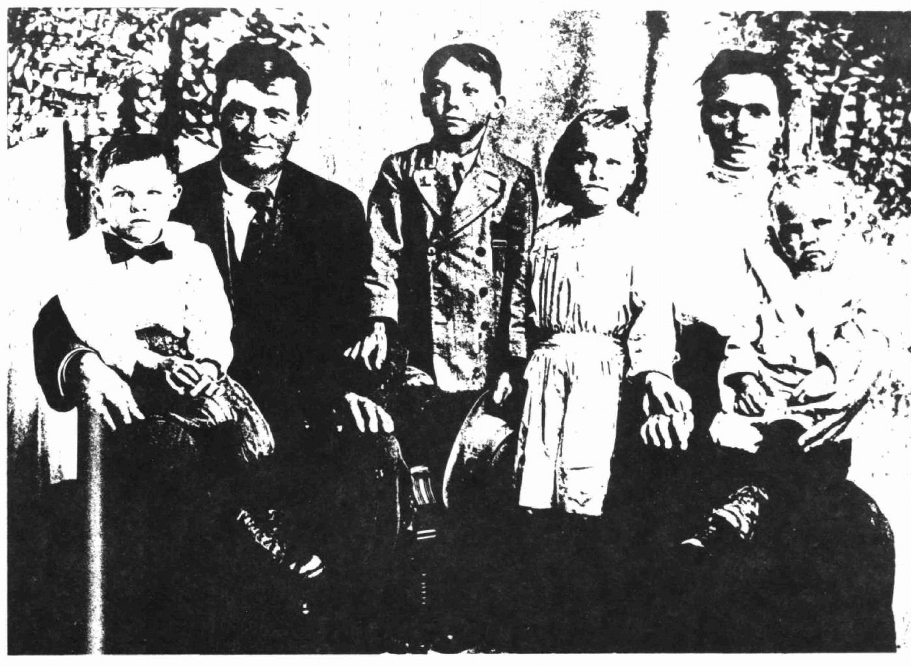

Wife of John Joseph Kastl · Jacob’s branch
Frances Marie Policky
1884–1976

What the book records
| Also written as | Frances Policky, Frances M. Polickyp. 47 p. 49 |
|---|---|
| Born | 27 May 1884, Semikovice, Moraviap. 48As printed
|
| Lived | A farm near Yukon, Oklahoma, bought shortly after her marriagep. 48As printed
|
| Died | 10 September 1976p. 48As printed
|
| Buried | Yukon, Oklahomap. 48As printed
|
Family
Spouse
John Joseph Kastl 1874–1950
Married 4 June 1902, Brainard, Nebraska p. 47 p. 48
Children
- James Charles Kastl b. 1903
- Rose Mary Kastl b. 1905
- Albin Joseph Kastl b. 1908
- John Francis Kastl b. 1909
- Leonard Jacob Kastl b. 1915
- Frank Julius Kastl b. 1918
- Ludmilla Frances Kastl b. 1920
All their children were born on their farm near Yukon, Oklahoma. The photo on p. 49 is captioned "John J. Kastl — Frances Policky Albin, Jim, Rose, and John".